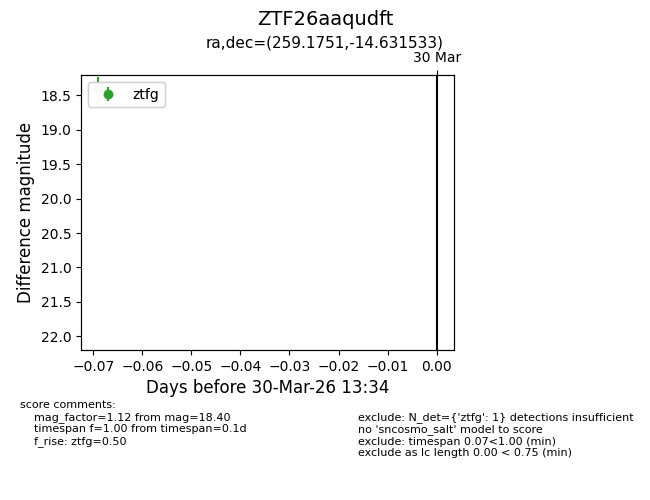
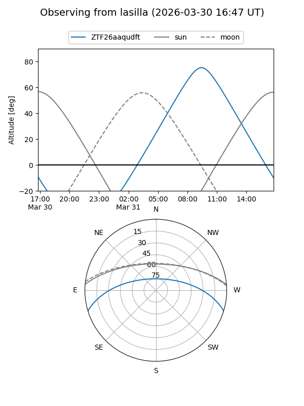
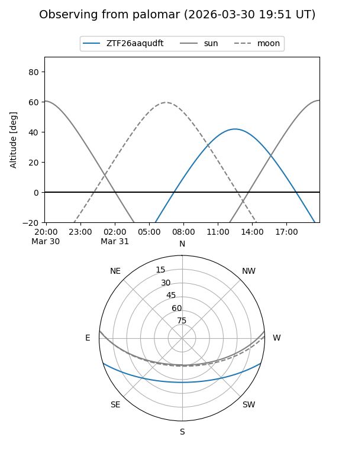

ZTF26aaqudft
Target ZTF26aaqudft at 2026-03-30 13:38
Aliases and brokers:
FINK: link
Lasair: link
ALeRCE: link
alt names
ZTF26aaqudft (ztf,fink_ztf)
Coordinates:
equatorial (ra, dec) = 259.1751,-14.63153
equatorial (HMS+DMS) = 17:16:42.02,-14:37:53.52
galactic (l, b) = (8.5266,+13.34009)
Flags:
Photometry:
last ztfg=18.40
1 ztfg detections
Lightcurve

Visibility


Additional plots